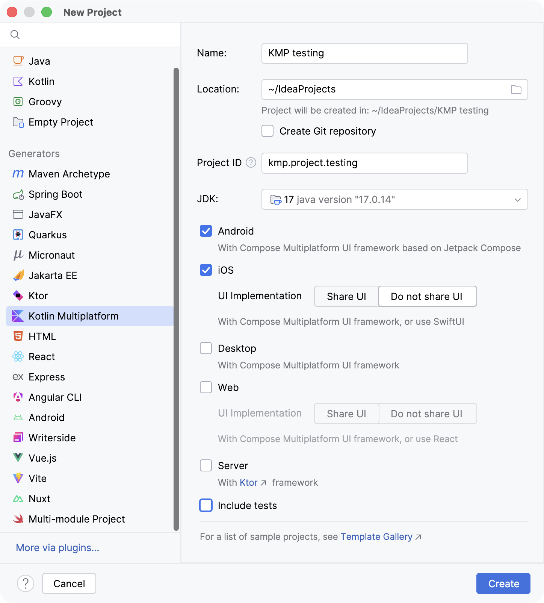
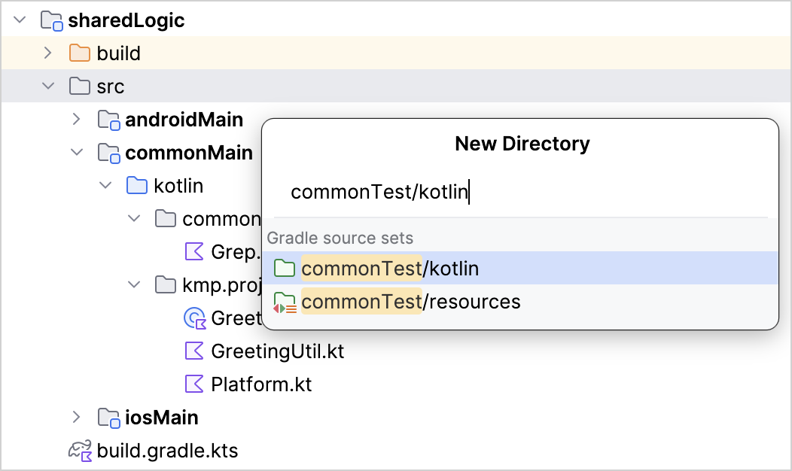
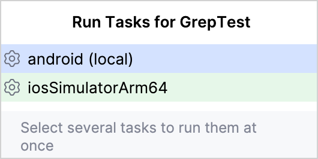
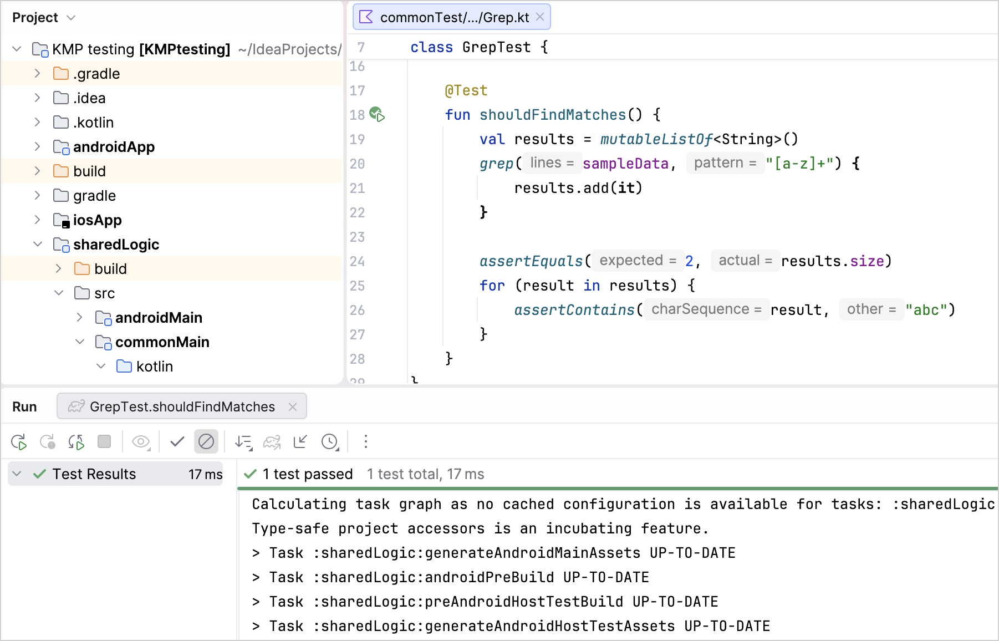
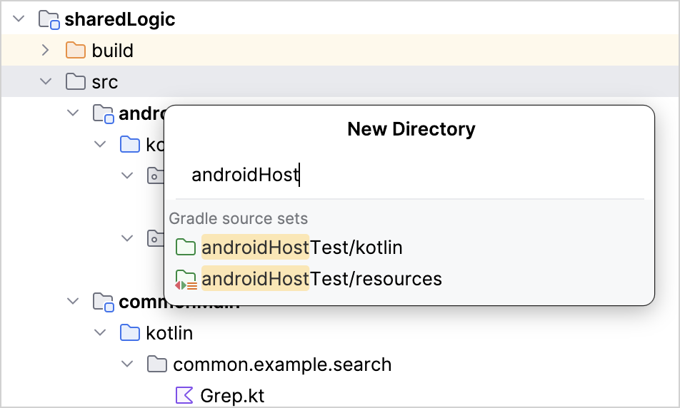
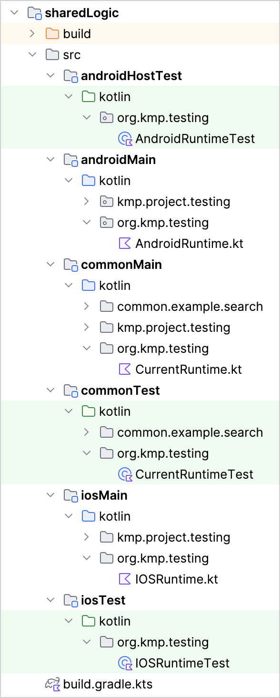
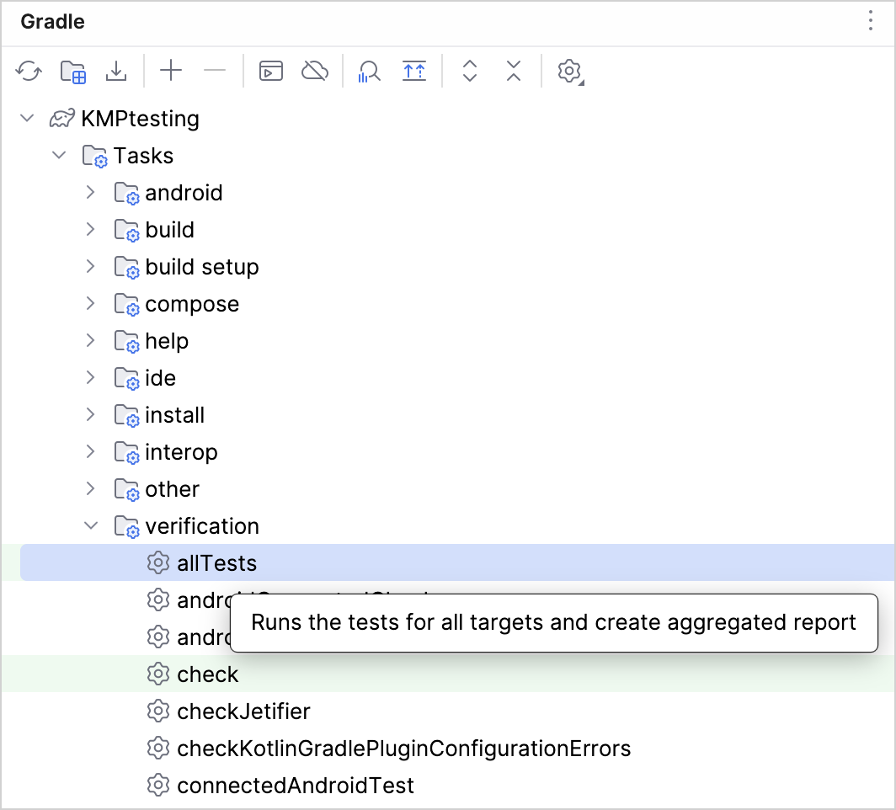
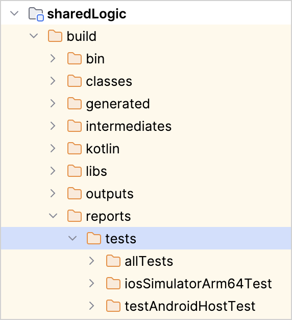
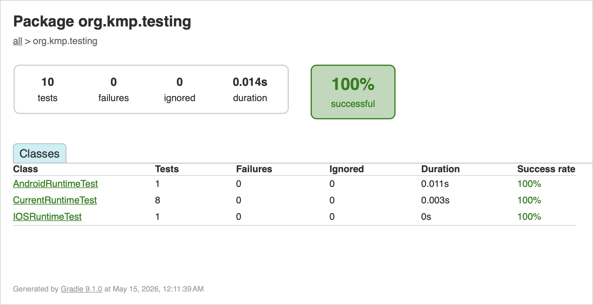
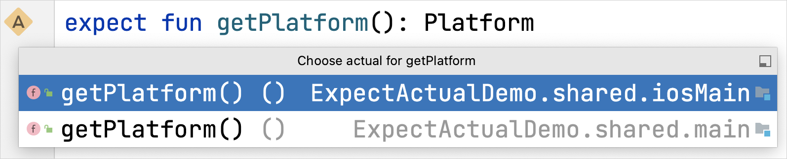

测试你的 Kotlin Multiplatform 应用
在本教程中，您将学习如何在 Kotlin 多平台应用中创建、配置和运行测试。
多平台项目的测试可分为两类：
共享代码的测试。这些测试可以在任何平台上使用任何受支持的框架进行运行。
针对平台特定代码的测试。这些测试对于验证平台特定逻辑至关重要。它们使用平台特定的框架，并能利用该框架的附加功能，例如更丰富的 API 和更广泛的断言选项。
多平台项目同时支持这两类代码。本教程将首先向您展示如何在一个简单的 Kotlin 多平台项目中为“共享代码”设置、创建和运行单元测试。随后，您将通过一个更复杂的示例进行实践，该示例需要同时对通用代码和平台特定代码进行测试。
测试一个简单的多平台项目
创建一个项目
在 快速入门 中，按照说明完成 配置 Kotlin 多平台开发环境。
在 IntelliJ IDEA 中，选择“文件” | “新建” | “项目”。
在左侧面板中，选择“Kotlin Multiplatform”。
-
在“新建项目”窗口中填写以下字段：
名称：KMP testing
项目 ID：kmp.project.testing
选择 Android 目标。如果您使用的是 Mac，请同时选择 iOS。请务必选中“不共享 UI”选项。
-
取消选中“包含测试”，然后单击“创建”。

编写代码
在 sharedLogic/src/commonMain/kotlin 目录下，创建一个新的 common.example.search 包。在此包中，创建一个名为 Grep.kt 的 Kotlin 文件，其中包含以下函数：
fun grep(lines: List<String>, pattern: String, action: (String) -> Unit) {
val regex = pattern.toRegex()
lines.filter(regex::containsMatchIn)
.forEach(action)
}该函数的设计旨在模仿 UNIX grep command。在此，该函数接受多行文本、一个用作正则表达式的模式，以及一个在每行匹配该模式时被调用的函数。
添加测试
现在，让我们测试一下共享代码。其中一个关键部分是用于通用测试的源码集，它将 kotlin.test API 库作为依赖项。
-
在
sharedLogic/build.gradle.kts文件中，请确认是否存在对kotlin.test库的依赖：sourceSets { //... commonTest.dependencies { implementation(libs.kotlin.test) } } -
commonTest源码集存储了所有常见的测试。你需要在项目中创建一个同名的目录：右键单击
sharedLogic/src目录，然后选择“新建 | 目录”。IDE 将显示一组选项。开始输入
commonTest/kotlin路径以缩小选择范围，然后从列表中选择它：

在
commonTest/kotlin目录下，创建一个新的common.example.search包。-
在该包中，创建
Grep.kt文件，并将其更新为以下单元测试：import kotlin.test.Test import kotlin.test.assertContains import kotlin.test.assertEquals class GrepTest { companion object { val sampleData = listOf( "123 abc", "abc 123", "123 ABC", "ABC 123" ) } @Test fun shouldFindMatches() { val results = mutableListOf<String>() grep(sampleData, "[a-z]+") { results.add(it) } assertEquals(2, results.size) for (result in results) { assertContains(result, "abc") } } }
如您所见，导入的注解和断言既不依赖于特定平台，也不依赖于特定框架。稍后运行此测试时，特定于平台的框架将提供测试运行器。
探索 Kotlin.test API
kotlin.test 库提供了与平台无关的注解和断言，供您在测试中使用。诸如 Test 之类的注解，会映射到所选框架提供的注解或其最接近的等效注解。
断言是通过 Asserter interface 的实现来执行的。该接口定义了测试中常执行的各种检查。该 API 提供了一个默认实现，但通常你会使用特定框架的实现。
例如，JVM 支持 JUnit 4、JUnit 5 和 TestNG 框架。在 Android 平台上，对 assertEquals() 的调用可能会导致对 asserter.assertEquals() 的调用，其中 asserter 对象是 JUnit4Asserter 的实例。在 iOS 平台上，Asserter 类型的默认实现会与 Kotlin/Native 测试运行器配合使用。
运行测试
您可以通过以下方式执行测试：
通过边栏中的“运行”图标运行
shouldFindMatches()测试函数。通过右键菜单运行测试文件。
通过边栏中的“运行”图标运行
GrepTest测试类。
还有一个便捷的 ⌃ ⇧ F10/Ctrl+Shift+F10 快捷键。无论选择哪种选项，你都会看到一个用于运行测试的目标列表：

对于 android 选项，测试将使用 JUnit 4 运行。对于 iosSimulatorArm64，Kotlin 编译器会检测测试注解，并生成一个测试二进制文件，该文件由 Kotlin/Native 自带的测试运行器执行。
以下是一个测试运行成功的输出示例：

处理更复杂的项目
为共享代码编写测试
你已经使用 grep() 函数为“共享代码”创建了一个测试。现在，让我们考虑一个更高级的“共享代码”测试，使用 CurrentRuntime 类。该类包含代码执行所在平台的详细信息。例如，对于在本地 JVM 上运行的 Android 单元测试，它可能包含“OpenJDK”和“17.0”这两个值。
应创建一个 CurrentRuntime 实例，其名称和版本均为字符串，其中版本为可选参数。当包含版本时，只需使用字符串开头的数字（如有）。
在
commonMain/kotlin目录下，创建一个新的org.kmp.testing包。-
在该包中，创建
CurrentRuntime.kt文件，并将其更新为以下实现：class CurrentRuntime(val name: String, rawVersion: String?) { companion object { val versionRegex = Regex("^[0-9]+(\\.[0-9]+)?") } val version = parseVersion(rawVersion) override fun toString() = "$name version $version" private fun parseVersion(rawVersion: String?): String { val result = rawVersion?.let { versionRegex.find(it) } return result?.value ?: "unknown" } } 在
commonTest/kotlin目录下，创建一个新的org.kmp.testing包。-
在此包中，创建
CurrentRuntimeTest.kt文件，并用以下与平台和框架无关的测试对其进行更新：import kotlin.test.Test import kotlin.test.assertEquals class CurrentRuntimeTest { @Test fun shouldDisplayDetails() { val runtime = CurrentRuntime("MyRuntime", "1.1") assertEquals("MyRuntime version 1.1", runtime.toString()) } @Test fun shouldHandleNullVersion() { val runtime = CurrentRuntime("MyRuntime", null) assertEquals("MyRuntime version unknown", runtime.toString()) } @Test fun shouldParseNumberFromVersionString() { val runtime = CurrentRuntime("MyRuntime", "1.2 Alpha Experimental") assertEquals("MyRuntime version 1.2", runtime.toString()) } @Test fun shouldHandleMissingVersion() { val runtime = CurrentRuntime("MyRuntime", "Alpha Experimental") assertEquals("MyRuntime version unknown", runtime.toString()) } }
你可以通过任何 在 IDE 中可用 方式运行此测试。
添加特定于平台的测试
现在你已经掌握了为共享代码编写测试的经验，让我们来探索如何为 Android 和 iOS 编写特定于平台的测试。
要创建 CurrentRuntime 的实例，请在公共 CurrentRuntime.kt 文件中按如下方式声明一个函数：
expect fun determineCurrentRuntime(): CurrentRuntime该函数应针对每个支持的平台分别实现。否则，构建将失败。除了在每个平台上实现该函数外，你还应提供测试用例。让我们为 Android 和 iOS 创建测试用例。
对于 Android
在
androidMain/kotlin目录下，创建一个新的org.kmp.testing包。-
在该包中，创建
AndroidRuntime.kt文件，并将其更新为预期determineCurrentRuntime()函数的实际实现：actual fun determineCurrentRuntime(): CurrentRuntime { val name = System.getProperty("java.vm.name") ?: "Android" val version = System.getProperty("java.version") return CurrentRuntime(name, version) } -
在
sharedLogic/src目录内创建一个用于测试的目录：右键单击
sharedLogic/src目录，然后选择“新建 | 目录”。IDE 将显示一组选项。-
开始输入
androidHostTest/kotlin路径以缩小选择范围，然后从列表中选择它：
在
androidHostTest/kotlin目录下，创建一个新的org.kmp.testing包。-
在该包中，创建
AndroidRuntimeTest.kt文件，并将其更新为以下 Android 测试。为了使测试通过，请确保设置运行时的实际名称和版本（不过观察测试失败的情况也很有帮助）：import kotlin.test.Test import kotlin.test.assertContains import kotlin.test.assertEquals class AndroidRuntimeTest { @Test fun shouldDetectAndroid() { val runtime = determineCurrentRuntime() assertContains(runtime.name, "OpenJDK") assertEquals(runtime.version, "21.0") } }
在本地 JVM 上运行一个 Android 专用的测试可能看起来有些奇怪。这是因为这些测试作为本地单元测试在当前机器上运行。正如 Android Studio 文档 中所述，这些测试与在设备或模拟器上运行的仪器化测试不同。
您可以向项目中添加其他类型的测试。要了解仪器化测试，请参阅此 Touchlab 指南。
对于 iOS
在
iosMain/kotlin目录中，创建一个新的org.kmp.testing目录。-
在此目录下，创建
IOSRuntime.kt文件，并将其更新为预期determineCurrentRuntime()函数的实际实现：import kotlin.experimental.ExperimentalNativeApi import kotlin.native.Platform @OptIn(ExperimentalNativeApi::class) actual fun determineCurrentRuntime(): CurrentRuntime { val name = Platform.osFamily.name.lowercase() return CurrentRuntime(name, null) } -
在
sharedLogic/src目录下创建一个新目录：右键单击
sharedLogic/src目录，然后选择“新建 | 目录”。IDE 将显示一组选项。开始输入
iosTest/kotlin路径以缩小选择范围，然后从列表中选择它：
在
iosTest/kotlin目录中，创建一个新的org.kmp.testing目录。-
在该目录中创建
IOSRuntimeTest.kt文件，并将其更新为以下 iOS 测试：import kotlin.test.Test import kotlin.test.assertEquals class IOSRuntimeTest { @Test fun shouldDetectOS() { val runtime = determineCurrentRuntime() assertEquals(runtime.name, "ios") assertEquals(runtime.version, "unknown") } }
运行多个测试并分析报告
至此，您已拥有通用、Android 和 iOS 实现的代码及其测试用例。项目的目录结构应大致如下所示：

您可以通过右键菜单或使用快捷键运行单个测试。另一种方法是使用 Gradle 任务。例如，如果你运行 allTests Gradle 任务，项目中的每个测试都将通过相应的测试运行器执行：

运行测试时，除了 IDE 中的输出结果外，还会生成 HTML 报告。你可以在 sharedLogic/build/reports/tests 目录中找到这些报告：

运行 allTests 任务并查看其生成的报告：
allTests/index.html文件包含通用测试和 iOS 测试的合并报告（iOS 测试依赖于通用测试，并在通用测试之后运行）。testDebugUnitTest和testReleaseUnitTest文件夹中包含两个默认 Android 构建版本的报告。（目前，Android 测试报告不会自动与allTests报告合并。）

多平台项目中使用测试的规则
至此，您已在 Kotlin 多平台应用中创建、配置并执行了测试。在今后的项目中处理测试时，请记住：
为共享代码编写测试时，请仅使用多平台库，例如 Kotlin.test。将依赖项添加到
commonTest源码集。应仅间接使用来自
kotlin.testAPI 的Asserter类型。尽管Asserter实例是可见的，但您无需在测试中使用它。请始终在测试库的 API 范围内进行操作。幸运的是，编译器和 IDE 会阻止你使用特定于框架的功能。
虽然在
commonTest中使用哪个框架运行测试并不重要，但建议你使用计划采用的每个框架分别运行测试，以验证开发环境是否配置正确。请考虑物理特性上的差异。例如，滚动惯性和摩擦值会因平台和设备而异，因此设置相同的滚动速度可能会导致不同的滚动位置。请务必在目标平台上测试组件，以确保其行为符合预期。
为平台特定代码编写测试时，您可以使用相应框架的功能，例如注解和扩展。
您既可以通过 IDE 运行测试，也可以使用 Gradle 任务运行测试。
运行测试时，系统会自动生成 HTML 格式的测试报告。
接下来该做什么？
expect 与 actual 声明
expect 与 actual 声明允许你从 Kotlin Multiplatform 模块访问平台专用 API，同时在共享代码中提供与平台无关的 API。
expect 与 actual 声明的规则
要定义 expect 与 actual 声明，请遵循以下规则：
在通用源码集中，声明一个标准的 Kotlin 构造。这可以是函数、属性、类、接口、枚举或注解。
使用
expect关键字标记该构造。这就是你的声明。这些声明可在共享代码中使用，但不应包含任何实现。相反，具体实现由平台专用代码提供。在每个平台专用源码集中，在同一包中声明相同的构造，并使用
actual关键字进行标记。这是你的 actual 声明，通常包含使用平台专用库的实现。
在针对特定目标进行编译时，编译器会尝试将找到的每个 actual 声明与共享代码中的相应 expect 声明进行匹配。编译器确保：
公共源码集中的每个 expect 声明，在每个平台专用源码集中都有一个匹配的 actual 声明。
expect 声明不包含任何实现。
每个 actual 声明都与相应的 expect 声明共享同一个包，例如
org.mygroup.myapp.MyType。
在为不同平台生成目标代码时，Kotlin 编译器会合并相互对应的 expect 声明和 actual 声明。它会为每个平台生成一个包含其实际实现的声明。在共享代码中对 expect 声明的每次调用，都会在生成的平台代码中调用正确的 actual 声明。
当使用不同目标平台之间共享的中间源码集时，您可以声明 actual 声明。例如，将 iosMain 视为 iosArm64Main 和 iosSimulatorArm64Main 平台源码集之间共享的中间源码集。通常只有 iosMain 包含 actual 声明，而平台源码集则不包含。随后，Kotlin 编译器将利用这些 actual 声明，为相应的平台生成目标代码。
IDE 可协助处理常见问题，包括：
缺失的声明
包含实现的 expect 声明
声明签名不匹配
位于不同包中的声明
您还可以使用 IDE 从 expect 声明导航至 actual 声明。选择边栏图标查看 actual 声明，或使用 快捷方式。

使用 expect 与 actual 声明的不同方式
让我们探索使用 expect/actual 机制的不同选项，以解决访问平台 API 的问题，同时仍能在共享代码中使用这些 API。
假设有一个 Kotlin Multiplatform 项目，你需要实现 Identity 类型，该类型应包含用户的登录名和当前进程 ID。该项目包含 commonMain、jvmMain 和 nativeMain 源码集，以确保应用程序既能在 JVM 上运行，也能在 iOS 等原生环境中运行。
expect 与 actual 函数
你可以定义一个 Identity 类型和一个工厂函数 buildIdentity()，该函数在通用源码集中声明，并在各平台源码集中以不同方式实现：
-
在
commonMain中，声明一个简单类型和一个 expect 工厂函数：package identity class Identity(val userName: String, val processID: Long) expect fun buildIdentity(): Identity -
在
jvmMain源码集中，使用标准 Java 库实现解决方案：package identity import java.lang.System import java.lang.ProcessHandle actual fun buildIdentity() = Identity( System.getProperty("user.name") ?: "None", ProcessHandle.current().pid() ) -
在
nativeMain源码集中，使用 POSIX 并借助原生依赖项实现解决方案：package identity import kotlinx.cinterop.toKString import platform.posix.getlogin import platform.posix.getpid actual fun buildIdentity() = Identity( getlogin()?.toKString() ?: "None", getpid().toLong() )
在此处，平台函数会返回特定于该平台的 Identity 实例。
包含expect 函数和 actual 函数的接口
如果工厂函数变得过于庞大，请考虑使用一个通用的 Identity 接口，并在不同平台上以不同的方式实现它。
一个 buildIdentity() 工厂函数应返回 Identity，但这次返回的是一个实现通用接口的对象：
-
在
commonMain中，定义Identity接口和buildIdentity()工厂函数：// 在 commonMain 源代码集中： expect fun buildIdentity(): Identity interface Identity { val userName: String val processID: Long } -
创建该接口的特定于平台的实现，无需额外使用 expect 和 actual 声明：
// 在 jvmMain 源代码集中： actual fun buildIdentity(): Identity = JVMIdentity() class JVMIdentity( override val userName: String = System.getProperty("user.name") ?: "none", override val processID: Long = ProcessHandle.current().pid() ) : Identity// 在 nativeMain 源代码集中： actual fun buildIdentity(): Identity = NativeIdentity() class NativeIdentity( override val userName: String = getlogin()?.toKString() ?: "None", override val processID: Long = getpid().toLong() ) : Identity
这些平台函数返回特定于平台的 Identity 实例，这些实例由 JVMIdentity 和 NativeIdentity 平台类型实现。
expect 属性与 actual 属性
你可以修改前面的示例，并期望 val 属性存储一个 Identity。
将此属性标记为 expect val，然后在平台源码集中实现它：
//在 commonMain 源码集：
expect val identity: Identity
interface Identity {
val userName: String
val processID: Long
}
//在 jvmMain 源代码集中：
actual val identity: Identity = JVMIdentity()
class JVMIdentity(
override val userName: String = System.getProperty("user.name") ?: "none",
override val processID: Long = ProcessHandle.current().pid()
) : Identity
//在 nativeMain 源代码集中：
actual val identity: Identity = NativeIdentity()
class NativeIdentity(
override val userName: String = getlogin()?.toKString() ?: "None",
override val processID: Long = getpid().toLong()
) : Identityexpect 对象与 actual 对象
如果希望 IdentityBuilder 在每个平台上都是单例，可以将它定义为 expect 对象，并让各平台提供具体实现：
// 在 commonMain 源代码集中：
expect object IdentityBuilder {
fun build(): Identity
}
class Identity(
val userName: String,
val processID: Long
)
// 在 jvmMain 源代码集中：
actual object IdentityBuilder {
actual fun build() = Identity(
System.getProperty("user.name") ?: "none",
ProcessHandle.current().pid()
)
}
// 在 nativeMain 源代码集中：
actual object IdentityBuilder {
actual fun build() = Identity(
getlogin()?.toKString() ?: "None",
getpid().toLong()
)
}关于依赖注入的建议
为了构建松耦合架构，许多 Kotlin 项目采用了依赖注入（DI）框架。DI 框架允许根据当前环境将依赖项注入到组件中。
例如，在测试环境和生产环境中，或者在部署到云端时与本地托管时，你可能会注入不同的依赖项。只要依赖项通过接口进行定义，无论是在编译时还是运行时，都可以注入任意数量的不同实现。
当依赖关系与平台相关时，同样的原理也适用。在共享代码中，组件可以使用常规的 Kotlin 接口 来表达其依赖关系。随后，可以配置依赖注入（DI）框架，使其注入平台特定的实现，例如来自 JVM 或 iOS 模块的实现。
这意味着，expect 与 actual 声明仅需在 DI 框架的配置中出现。示例请参见 使用平台特定的 API。
采用这种方法，您只需使用接口和工厂函数即可轻松采用 Kotlin Multiplatform。如果您已经在项目中使用依赖注入框架来管理依赖项，我们建议采用相同的方法来管理平台依赖项。
expect 类和 actual 类
您可以使用 expect 类和 actual 类来实现相同的解决方案：
// 在 commonMain 源代码集中：
expect class Identity() {
val userName: String
val processID: Int
}
// 在 jvmMain 源代码集中：
actual class Identity {
actual val userName: String = System.getProperty("user.name") ?: "None"
actual val processID: Long = ProcessHandle.current().pid()
}
// 在 nativeMain 源代码集中：
actual class Identity {
actual val userName: String = getlogin()?.toKString() ?: "None"
actual val processID: Long = getpid().toLong()
}您可能已经在演示材料中见过这种做法。但是，在仅需接口即可满足需求的简单情况下使用类是不推荐的。
使用接口时，您的设计不会被限制为每个目标平台仅有一种实现。此外，在测试中替换为模拟实现，或在单一平台上提供多种实现，都会容易得多。
通常情况下，应尽可能使用标准语言结构，而不是使用 expect 和 actual 声明。
如果您决定使用 expect 和 actual 类，Kotlin 编译器会就该功能的 Beta 状态向您发出警告。要抑制此警告，请在 Gradle 构建文件中添加以下编译器选项：
kotlin {
compilerOptions {
// 应用于所有 Kotlin 源代码集的通用编译器选项
freeCompilerArgs.add("-Xexpect-actual-classes")
}
}继承平台类
在某些特殊情况下，在类中使用 expect 关键字可能是最佳方案。假设 Identity 类型在 JVM 上已经存在：
open class Identity {
val login: String = System.getProperty("user.name") ?: "none"
val pid: Long = ProcessHandle.current().pid()
}为了使其与现有的代码库和框架兼容，您对 Identity 类型的实现可以继承该类型并复用其功能：
-
为了解决这个问题，请在
commonMain中使用expect关键字声明一个类：expect class CommonIdentity() { val userName: String val processID: Long } -
在
nativeMain中，提供一个实现该功能的actual 声明：actual class CommonIdentity { actual val userName = getlogin()?.toKString() ?: "None" actual val processID = getpid().toLong() } -
在
jvmMain中，提供一个从特定于平台的基类继承而来的actual 声明：actual class CommonIdentity : Identity() { actual val userName = login actual val processID = pid }
这样，CommonIdentity 类型既与您的设计兼容，又能充分利用 JVM 上的现有类型。
在框架中的应用
作为框架作者，您也会发现expect 声明和 actual 声明对您的框架很有用。
如果上面的示例属于某个框架的一部分，用户必须从 CommonIdentity 派生一个类型来提供显示名称。
在这种情况下，expect 声明是抽象的，并声明了一个抽象方法：
// 在框架代码库的 commonMain 中：
expect abstract class CommonIdentity() {
val userName: String
val processID: Long
abstract val displayName: String
}同样地，实际实现是抽象的，并声明 displayName 方法：
// 在框架代码库的 nativeMain 中：
actual abstract class CommonIdentity {
actual val userName = getlogin()?.toKString() ?: "None"
actual val processID = getpid().toLong()
actual abstract val displayName: String
}
// 在框架代码库的 jvmMain 中：
actual abstract class CommonIdentity : Identity() {
actual val userName = login
actual val processID = pid
actual abstract val displayName: String
}框架用户需要编写继承自expect 声明的共享代码，并自行实现缺失的方法：
// 在用户代码库的 commonMain 中：
class MyCommonIdentity : CommonIdentity() {
override val displayName = "Admin"
}高级用例
关于expect 声明和 actual 声明，存在一些特殊情况。
使用类型别名来满足 actual 声明
实际的 声明 实现并不一定需要从头编写。它可以是现有的类型，例如第三方库提供的类。
只要该类型满足与expect 声明相关的所有要求，即可使用。例如，考虑以下两个expect 声明：
expect enum class Month {
JANUARY, FEBRUARY, MARCH, APRIL, MAY, JUNE, JULY,
AUGUST, SEPTEMBER, OCTOBER, NOVEMBER, DECEMBER
}
expect class MyDate {
fun getYear(): Int
fun getMonth(): Month
fun getDayOfMonth(): Int
}在 JVM 模块中，可以使用 java.time.Month 枚举来实现第一个 expect 声明，使用 java.time.LocalDate 类来实现第二个。但是，无法将 actual 关键字直接添加到这些类型上。
作为替代方案，你可以使用 类型别名 来连接 expect 声明和特定于平台的类型：
actual typealias Month = java.time.Month
actual typealias MyDate = java.time.LocalDate在这种情况下，应将 typealias 声明定义在与 expect 声明相同的包中，并在其他位置创建被引用的类。
actual 声明中的扩展可见性
您可以让实际实现的可见性高于相应的 expect 声明。如果您不希望向普通客户端公开 API，此功能非常有用。
目前，如果可见性发生变化，Kotlin 编译器会报错。你可以通过在实际类型别名声明中应用 @Suppress("ACTUAL_WITHOUT_EXPECT") 来抑制此错误。从 Kotlin 2.0 开始，这一限制将不再适用。
例如，如果您在公共源码集中声明了以下expect 声明：
internal expect class Messenger {
fun sendMessage(message: String)
}你也可以在平台专用源码集中使用以下实际实现：
@Suppress("ACTUAL_WITHOUT_EXPECT")
public actual typealias Messenger = MyMessenger这里，一个内部的 expect 类通过类型别名拥有一个实际实现，该实现包含现有的 public MyMessenger。
实际实现中的额外枚举项
当在通用源码集中使用 expect 声明枚举时，每个平台模块都应包含相应的 actual 声明。这些声明必须包含相同的枚举常量，但也可以包含额外的常量。
当你使用现有的平台枚举来实现预期的枚举时，这非常有用。例如，考虑以下位于公共源码集中的枚举：
// 在 commonMain 源代码集中：
expect enum class Department { IT, HR, Sales }当你在平台源码集中为 Department 提供 actual 声明时，可以添加额外的常量：
// 在 jvmMain 源代码集中：
actual enum class Department { IT, HR, Sales, Legal }
// 在 nativeMain 源代码集中：
actual enum class Department { IT, HR, Sales, Marketing }然而，在这种情况下，平台源码集中的这些额外常量将与共享代码中的常量不匹配。因此，编译器要求您处理所有额外的情况。
实现 Department 上 when 构造的函数需要一个 else 子句：
// 必须包含else子句：
fun matchOnDepartment(dept: Department) {
when (dept) {
Department.IT -> println("The IT Department")
Department.HR -> println("The HR Department")
Department.Sales -> println("The Sales Department")
else -> println("Some other department")
}
}expect 注解类
expect 声明和 actual 声明均可与注解配合使用。例如，您可以声明一个 @XmlSerializable 注解，该注解必须在每个平台源码集中都有相应的actual 声明：
@Target(AnnotationTarget.CLASS)
@Retention(AnnotationRetention.RUNTIME)
expect annotation class XmlSerializable()
@XmlSerializable
class Person(val name: String, val age: Int)在特定平台上复用现有类型可能会很有帮助。例如，在 JVM 上，您可以使用 JAXB 规范 中的现有类型来定义注解：
import javax.xml.bind.annotation.XmlRootElement
actual typealias XmlSerializable = XmlRootElement在将 expect 与注解类结合使用时，还有一点需要考虑。注解用于向代码附加元数据，在签名中不会作为类型出现。在从未要求注解必须具有实际类的平台上，预期注解是否具有实际类并不重要。
您只需在使用该注解的平台上提供 actual 声明。此行为默认未启用，且要求该类型被标记为 OptionalExpectation。
取上文声明的 @XmlSerializable 注解并添加 OptionalExpectation：
@OptIn(ExperimentalMultiplatform::class)
@Target(AnnotationTarget.CLASS)
@Retention(AnnotationRetention.RUNTIME)
@OptionalExpectation
expect annotation class XmlSerializable()如果在某个平台上未声明实际类，而该平台又不需要该类，编译器将不会报错。
接下来该做什么？
有关使用平台特定 API 的各种方法的一般性建议，请参阅 使用平台特定的 API。